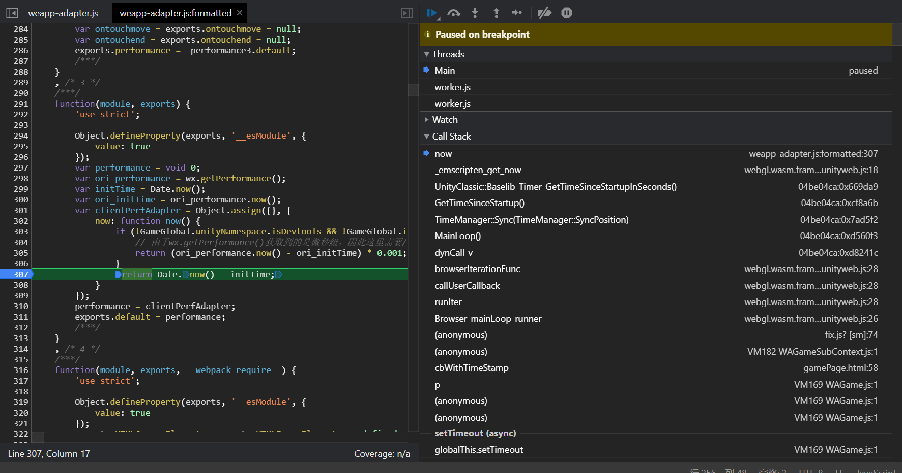
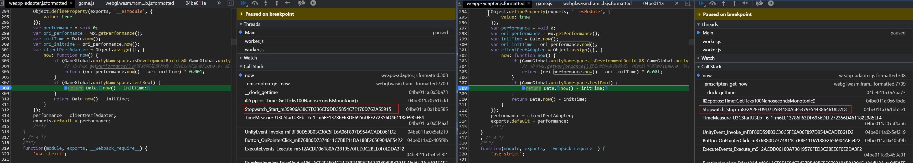
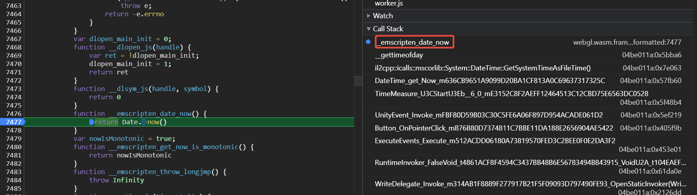

背景
游戏开发中，获取当前的时间戳是极为常用的操作。但是浏览器环境下，wasm本身是无法获取系统时间的，因而必须通过胶水层来实现目的。
本文将介绍微信小游戏环境的时间戳相关的内容，希望对读者有帮助。
胶水层主入口
众所周知，在Javascript中获取当前时间的方式有Date.now()和performance.now()两种方式。在微信小游戏的胶水层中，打开weapp-adapter.js文件即可看到胶水层是怎样Hook原有performance.now()函数的，摘抄代码如下：
1 |
|
可以看到，performance.now()函数在这里进行了Hook和重写，在默认的情况下，将返回Date.now() - initTime的值。
如果在开发者工具中打断点，可以看到调用栈如下：

可以看到，Unity内模块的各类时间方法最终都会调用到该函数中。
C#层的两种入口
在C#中，也有两种方式来获取时间戳，分别为DateTime.Now和StopWatch.Start/Stop方法。
针对StopWatch，可以看到，StopWatch.Start()和StopWatch.Stop()方法都会调用到performance.now()方法：

但是针对DateTime.Now方法，我们却没有触发这个断点，而是触发到了下图所示的断点：

在这里并没有调用到performance.now()，而是最终调用到了Date.now()方法。
性能差异对比
经过上述方案，我们了解到在微信小游戏环境下，从C#层获取当前时间一共有两种方案，分别是通过DateTime、StopWatch，而微信小游戏对性能敏感，因此有必要了解其开销如何。此外，微信小游戏在安卓环境下提供了高精度时间函数，也就是说我们需要关注三种时间戳函数的性能开销。
我们进行重复调用10000次时间戳函数，并且统计占用时间。此外为了进行对比，我们也对一个长度为5000的数组进行冒泡排序，分别对比耗时，相关代码如下：
1 | void Start() |
性能统计结果如下（取10次平均）：
| 平台 | DateTime.Now() | Stopwatch.GetTimestamp() | Sort |
|---|---|---|---|
| 开发者工具 | 19.7ms | 10.3ms | 25.4ms |
| iPhone 14 Pro(高性能模式) | 18.6ms | 21.2ms | 24ms |
| iPhone 14 Pro(普通模式) | 122.3ms | 41ms | 222.5ms |
| OPPO Find X | 106.4ms | 66.1ms | 73ms |
| OPPO Find X(高精度时间) | 103.1ms | 109.9ms | 72.5ms |
目前得出结论如下：
- 在开发者工具、安卓设备和iOS普通模式下，调用
performance.now()的性能显著高于Date.now()，所用耗时基本上只有后者的50%左右。 - 高性能模式下则相反，调用
Datetime.Now()的性能略优于performance.now()，原因目前未知。 - 微信提供的高精度时间函数性能显著低于自带的
performance.now()函数，因此只建议在Dev Build或者Profiling的时候开启。